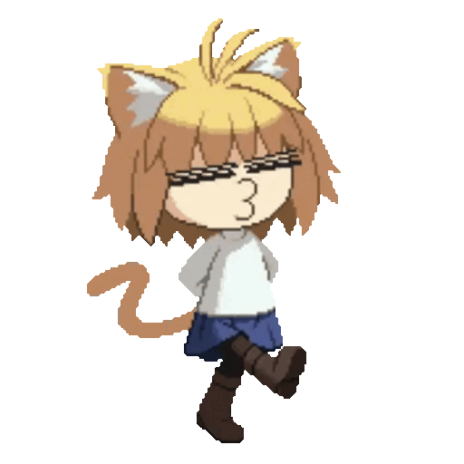

Neco-Arc (ネコアルク, Neko-Aruku ) é um Espírito Neco que aparece na série Tsukihime . Ela é uma pequena paródia de Arcueid Brunestud , atuando como personagem mascote de Type-Moon às vezes. Em Fate/Grand Carnival , ela aparece como Mysterious Neco X (謎のネコX, Nazo no Neko X ), parodiando Mysterious Heroine X / Artoria Pendragon .
Neco-Arc é membro da raça Neco Spirit , originária da Vila dos Grandes Gatos. Ela se tornou aluna da Sra. Ciel , constantemente agindo em retaliação por ter tão pouco tempo na tela e desejando que as pessoas pensassem que ela é inteligente. Ela é referida como a "obra de Kischur Zelretch Schweinorg " de acordo com Aoko Aozaki , sugerindo que ela foi trazida de outro mundo, mas também é dito que existe uma "certa lenda urbana" contando sobre seis Neco-Arcs e um que os excede que poderia ser uma materialização do TATARI .
Outros Neco-Arcs incluem Neco-Arc Bubbles , Neco-Arc Chaos , Neco-Arc Destiny , Neco-Arc Evolution e Mysterious Neco Z.
Neco-Arc é conhecido como o maior peixe pequeno do Cat Kingdom. A maioria dos personagens ficam nervosos com sua aparência, e ela atormenta especialmente White Len , chamando-a de "tsundere", e Satsuki Yumizuka , a quem Neco-Arc constantemente lembra que ela não tem um papel importante em Tsukihime. Ela reconhece Miyako Arima como uma futura rival muito esperada.
creditos para cupui
Neco-Arc é o segundo personagem mais forte do Nasuverse depois de Magical Amber. Todas as suas técnicas são extremamente poderosas como "Dead Neco-ning" e muitas outras, capazes de destruir tudo em seu caminho. Seus raios oculares são chamados de "Feixe do Ancestral Verdadeiro", uma "explosão vagamente familiar" que não pode ser totalmente observada a olho nu.Ela tem uma habilidade de teletransporte chamada "Opuba!". Seu uppercut, "Cat Out of Hell", manda o oponente voando para o céu. Seu movimento matador é eu quero ir para o Jardim dos Crocodilos (ワニ園に行きたいわたし, Wani-en ni ikitai watashi) onde ela ataca horizontalmente se transformando em um foguete. Como o resto, sua temível eficácia é seriamente problemática e pode ter alguma conexão com o Adeus, Ciel-sensei! Nossa amizade terminou no Jardim dos Crocodilos! (さらば知得留！ ワニ園に散った友情? ) técnica de sua terceira lista de comandos de pesquisa de popularidade de personagem. O Elite Neco Corps (エリートネコ部隊, Erītoneko butai ? ) convoca a única unidade militar do GCV, mas embora eles se vangloriem de poder, não está relacionado ao seu poder como técnica. O alto grau de aleatoriedade em que ela não consegue controlá-los torna isso útil apenas como provocação.